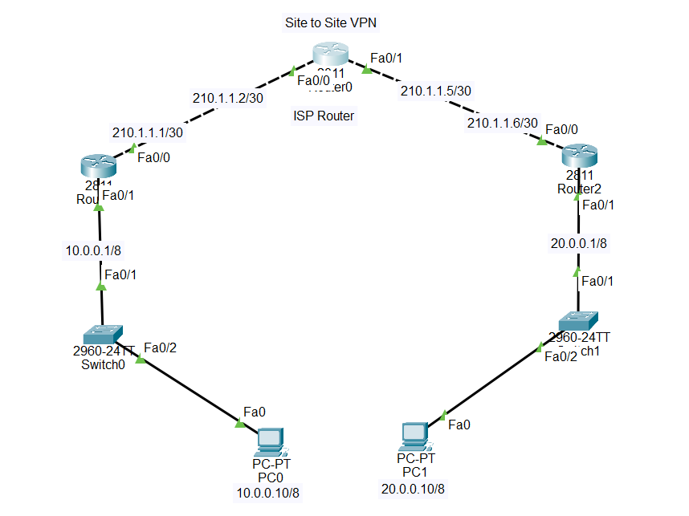

1.All routers interface up & IPs are assigned.
2.Routing in a proper routing protocol.
Router(config)#crypto isakmp policy 1 //Creates ISAKMP policy number 1 (lower number = higher priority)
Router(config-isakmp)# encryption aes //Uses AES encryption to protect IKE Phase 1 negotiation
Router(config-isakmp)# hash md5
Router(config-isakmp)# authentication pre-share //Uses a pre-shared key (PSK) for peer authentication
Router(config-isakmp)# group 5 //Uses Diffie-Hellman group 5 for key exchange
Router(config-isakmp)# lifetime 1800 //Sets the Phase 1 SA lifetime to 1800 seconds (30 minutes)
Router(config-isakmp)#exit
Router(config)#crypto isakmp key palli-it address 210.1.1.6
Router(config)#crypto ipsec transform-set Hadi's_set esp-3des esp-md5-hmac
Router(config)#crypto map hadi 1 ipsec-isakmp
% NOTE: This new crypto map will remain disabled until a peer
and a valid access list have been configured.
Router(config-crypto-map)#set peer 210.1.1.6
Router(config-crypto-map)# set transform-set Hadi's_set
Router(config-crypto-map)# match address 100 //ACL Identity match by address ‘100’
Router(config-crypto-map)#exit
Router(config)#access-list 100 permit ip host 10.0.0.10 host 20.0.0.10
Router(config)#int f0/0
Router(config-if)#crypto map hadi
*Jan 3 07:16:26.785: %CRYPTO-6-ISAKMP_ON_OFF: ISAKMP is ON
Router(config)#crypto isakmp policy 1
Router(config-isakmp)# encryption aes
Router(config-isakmp)# hash md5
Router(config-isakmp)# authentication pre-share
Router(config-isakmp)# group 5
Router(config-isakmp)# lifetime 1800
Router(config-isakmp)#exit
Router(config)#crypto isakmp key palli-it address 210.1.1.1
Router(config)#crypto ipsec transform-set Hadi's_set esp-3des esp-md5-hmac
Router(config)#crypto map hadi 1 ipsec-isakmp
% NOTE: This new crypto map will remain disabled until a peer
and a valid access list have been configured.
Router(config-crypto-map)# set peer 210.1.1.1
Router(config-crypto-map)# set transform-set Hadi's_set
Router(config-crypto-map)# match address 100
Router(config-crypto-map)#access-list 100 permit ip host 20.0.0.10 host 10.0.0.10
Router(config)#int f0/0
Router(config-if)#crypto map hadi
*Jan 3 07:16:26.785: %CRYPTO-6-ISAKMP_ON_OFF: ISAKMP is ON
1.
Router#show crypto isakmp sa //Displays IKE Phase 1 Security Associations (SA)
IPv4 Crypto ISAKMP SA
dst src state conn-id slot status
IPv6 Crypto ISAKMP SA
2.
Router#show crypto isakmp policy
Global IKE policy
Protection suite of priority 1
encryption algorithm: AES - Advanced Encryption Standard (128 bit keys).
hash algorithm: Message Digest 5
authentication method: Pre-Shared Key
Diffie-Hellman group: #5 (1536 bit)
lifetime: 1800 seconds, no volume limit
3.
Router#show crypto ipsec sa
interface: FastEthernet0/0
Crypto map tag: hadi, local addr 20.0.0.1
protected vrf: (none)
local ident (addr/mask/prot/port): (20.0.0.10/255.255.255.255/0/0)
remote ident (addr/mask/prot/port): (10.0.0.10/255.255.255.255/0/0)
current_peer 210.1.1.1 port 500
PERMIT, flags={origin_is_acl,}
#pkts encaps: 0, #pkts encrypt: 0, #pkts digest: 0
#pkts decaps: 0, #pkts decrypt: 0, #pkts verify: 0
#pkts compressed: 0, #pkts decompressed: 0
#pkts not compressed: 0, #pkts compr. failed: 0
#pkts not decompressed: 0, #pkts decompress failed: 0
#send errors 0, #recv errors 0
local crypto endpt.: 20.0.0.1, remote crypto endpt.:210.1.1.1
path mtu 1500, ip mtu 1500, ip mtu idb FastEthernet0/0
current outbound spi: 0x0(0)
inbound esp sas:
--More--
4.
Router#show crypto map
Crypto Map hadi 1 ipsec-isakmp
Peer = 210.1.1.1
Extended IP access list 100
access-list 100 permit ip host 20.0.0.10 host 10.0.0.10
Current peer: 210.1.1.1
Security association lifetime: 4608000 kilobytes/3600 seconds
PFS (Y/N): N
Transform sets={
Hadi's_set,
}
Interfaces using crypto map hadi:
FastEthernet0/0